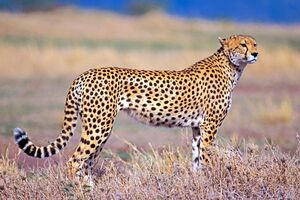

Cheetah

Built for speed, cheetahs are slender,
with long thin legs and a long tail.
They have coarse, short fur that is yellowish tan in colour and covered in solid black spots.
Black tear-shaped streaks on the face help to reflect the sun when hunting.
Adults weigh around 46–158 lb (21–72 kg).
- Type: Mammal
- Scientific Name: Acinonyx jubatus
- Average Length: 3.6 – 4.9 ft. (Adult, Head and body)
- Average LifeSpan: 10 - 12 years
- Weight: 77–143 lb
- Diet: Carnivore
- Habitat: shrublands, grasslands, savannahs, and temperate to hot deserts.
- Range: Sub-Saharan Africa, Southwest Asia, India and the Middle-East
The cheetah is the world's fastest land mammal. With acceleration that would leave most automobiles in the dust, a cheetah can go from 0 to 60 miles an hour in only three seconds. These big cats are quite nimble at high speed and can make quick and sudden turns in pursuit of prey.